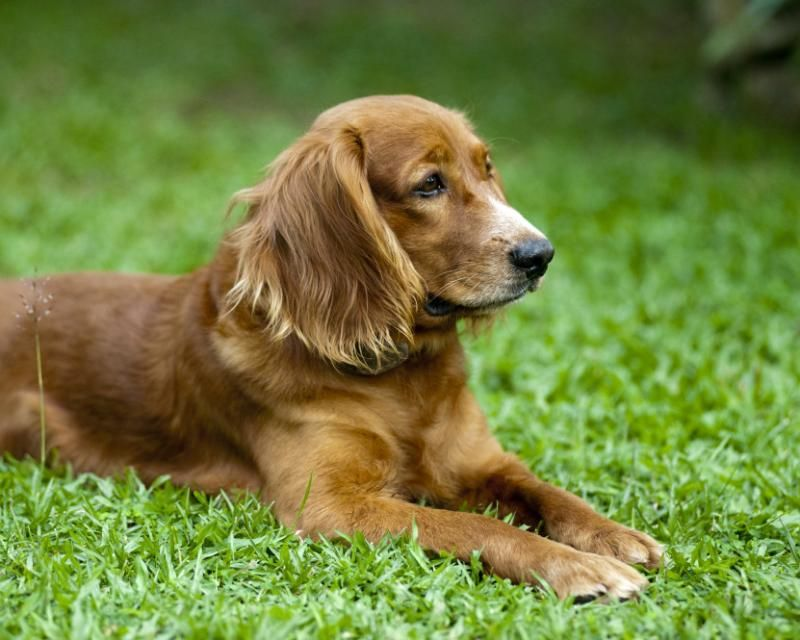

Recueillir
Accueillir les animaux abandonnés, perdus ou saisis, et leur offrir un refuge sécurisé.
Un refuge à taille humaine, porté par des bénévoles passionnés, au service du bien-être animal depuis 2008.
La SPAA (Société de Protection Animale de l'Agglomération) a été fondée en 2008 par un petit groupe de bénévoles décidés à venir en aide aux animaux abandonnés de la région. D'un simple local, le refuge est devenu un véritable lieu de vie capable d'accueillir une soixantaine d'animaux.
Fonctionnant sur un modèle proche de celui de la SPA, l'association ne vit que grâce à l'engagement de ses bénévoles, aux dons et au soutien de ses partenaires locaux.

Accueillir les animaux abandonnés, perdus ou saisis, et leur offrir un refuge sécurisé.
Assurer les soins vétérinaires, la vaccination, l'identification et la stérilisation.
Trouver une famille adaptée à chaque animal et accompagner les adoptants.
Bénévolat, dons, adoption : il existe mille façons d'aider le refuge.